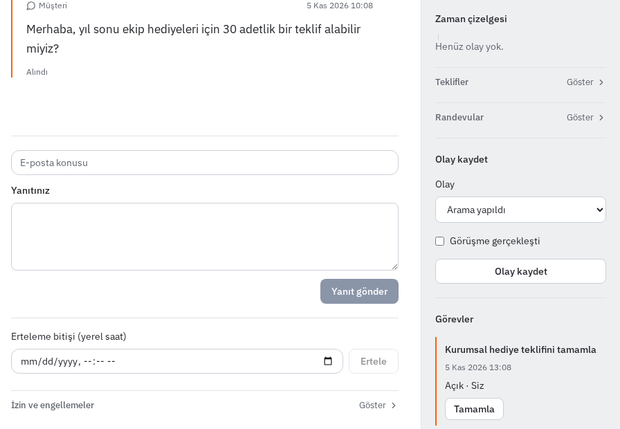

İşletmenizin çalışma alanı
Mesaj gelir.
İş orada kalmaz.
Jeeta, işletmenizin hesaplarıyla bağladığınız yapay zekâ ajanlarını aynı çalışma alanında buluşturur.
Ajanınız yanıtı ve içeriği hazırlar. Siz yazışmayı, bekleyen onayı ve sıradaki takip işini görürsünüz.
Kendi hesaplarınız. Sizin bağladığınız ajanlar.
01 Sabah · Müşteri yorumu
“Ekip hediyesi için bu fincanlardan 30 adet yaptırabilir miyiz?”
02 Ajanın hazırladığı yanıt
Onay bekleyen taslak
“Merhaba. İstediğiniz teslim tarihini ve model tercihinizi özel mesajla paylaşabilir misiniz? Teklifi bu bilgilere göre hazırlayalım.”
Taslağı okuyup gerekirse düzenler, ardından onaylarsınız.
Bu örnekte yorum yanıtları için bağlantının insan onayı ayarı açık. Siz onaylayana kadar bu taslak gönderilmez. Yazışma temsilidir; bu alan canlı panel değildir.
Aynı gün, işin devamı
Yanıtın ardından paylaşım.
Teklifin ardından takip.
03 Öğle · Paylaşım
Atölyeden bir fotoğraf, sıradaki gönderi.
Fotoğrafı materyal kütüphanesine eklersiniz. Bağladığınız ajan içeriği hazırlar; paylaşılacağı hesabı ve saati planlar.
Bu örnekte sosyal hesabın da insan onayı ayarı açık. Paylaşımı inceler, onaylarsınız. Gönderim koşulları sağlandığında Jeeta paylaşımı planlanan saatte gönderir.
Panelde
Materyal kütüphanesi
İçerik oluşturma
Sosyal medya yönetimi
04 Öğleden sonra · Takip
Teklif gönderilince konuşma bitmez.
Müşteri ayrıntıları e-postayla iletir. Teklifi hazırlarsınız. Ajanınız bu müşteri için bir takip görevi açabilir. Görevin zamanı, notlar ve görüşmenin hangi aşamada olduğu aynı kayıtta durur.
Panelde
Gelen kutusu
Kişiler
İş akışı

Günün sonunda yalnızca gönderdiğiniz mesajı değil, devamında yapılacak işi de görürsünüz.
Çalışma şekli
Hesap sizden.
Ajan sizden.
Jeeta'nın içinde kendi başına içerik üreten bir model yok. İşi, sizin bağladığınız ajan yapar. Jeeta çalışma kaydını tutar, kuralları denetler ve bağlı hesaplardan gönderimi yürütür.
- Hesapları bağlayın
- İşletmenizin e-posta ve sosyal hesaplarını çalışma alanına bağlarsınız. Ajan, kendisine verdiğiniz erişimle çalışır.
- Ajanınızı bağlayın
- Ajanlar sayfasında bağlantıyı kurarsınız. Yanıt metnini, içeriği ve reklam planını hazırlayan bağlı ajanınızdır.
- Onayın kapsamını seçin
- Yorum yanıtları ve sosyal paylaşımlar, bağlantıda insan onayı açıksa bekler. Bu ayar her gönderim türü için geçerli değildir; her e-posta veya özel mesajın onay beklediği anlamına gelmez.
- Reklam önerisini değerlendirin
- Ajanın önerdiği yeni reklam kampanyası insan onayı ister. Siz hedefi ve bütçeyi belirleyerek kampanyayı kendiniz açtığınızda ayrıca bir öneri onayı beklenmez.
Jeeta'ya hoş geldiniz
İşletmenize bir çalışma alanı açın.
Hesabınızı oluşturun. Çalışma alanı etkinleştirildikten sonra hesaplarınızı ve ajanınızı bağlayın. Kayıt tek başına gönderimi başlatmaz.
Etkinleştirme için ödeme doğrulaması ve etkinleştirme kodu gerekir.